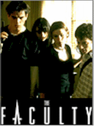

Contents | Features | Reviews | Books | Archives | Store |
 |
|
| Movie Credits | Buy It! |
The Faculty
Review by Sean Axmaker
Posted 25 December 1998
|  | Directed by Robert Rodriguez Starring
Elijah Wood, Piper Laurie, Written by David Wechter and Bruce Kimmel |
With Disturbing Behavior we got the Stepford Teens. Now Kevin Williamson and Robert Rodriguez have given us The Breakfast Club edition of Invasion of the Body Snatchers, only they’ve made it work. It’s not so much that it’s all that original or even surprising -- if you ever stop to think it through there isn’t much you wouldn’t predict -- but that they don’t really give you the time to stop and think. There’s a fun loving, self-aware cleverness to both the science-fiction/horror conventions and the teen movie clichés trotted out and tweaked around (courtesy of Mr. Williamson, who has turned such strengths into his entire career to date) and director Rodriguez, who seems to aspire to nothing beyond the well-turned genre picture, drives the film with a rollercoaster momentum. Deep it ain’t, but then that’s not exactly what its audience is buying tickets to, now, is it?
After a zippy little pre-titles sequence, where we see the first teachers (a sorry bunch of burned-out professionals barely making the grade themselves) "turned" by the alien invader in an old-fashioned locked-building chase punctuated by black humor and not-so-surprising twists, the heroes of the piece get their introductions. The heroes, naturally, are a bunch of students who would as soon drop a biting insult to one another than say hello. Among the classic types are: Casey (Elijah Wood), the perpetual nerd singled out for a sustained campaign of abuse and terror; Delilah (Jordana Brewster), the status- conscious head cheerleader and newspaper editor who would have fit right in with the Heathers; her boyfriend Stan (Shawn Hatosy), the misunderstood jock who is secretly a nice guy who would rather exercise his mind than his athletic prowess; Zeke (Josh Hartnett), the smart-ass drug dealer and campus bad boy (with an awful haircut) who is secretly a genius; Stokely (Clea DuVall), the loner intellectual gal who abets in making herself a social pariah by posing as a lesbian and escapes in pulp science fiction novels; and the new girl Marybeth (Laura Harris), a Southern transfer student with a honey-smothered drawl and a cheery "let’s be friends" come on.
The high school of The Faculty is only slightly less hellish than the vicious junior-high nastiness of Todd Solondz’s Welcome to the Dollhouse, except that these kids have all just sort of accepted everything: the pecking order, the catty jibes and snide insults, the ritualistic code of social behavior and mis-behavior. Students give their teachers unending shit and abuse -- and why not? Mr. Tate (Daniel von Bargen) is a supposedly secret alcoholic ("We exposed Mr. Tate’s drinking last year," sneers Delilah. "No one cared."), and Miss Burke (Famke Janssen) is a mousy, tentative little thing hiding behind frumpy hair, big glasses, and a voice that couldn’t carry more than ten feet. But when the bellicose football coach suddenly stops chewing people out and, horror of horrors, accepts the resignation of top quarterback and team captain Stan with understanding and support (when thanked for not going ballistic, he replies, "What kind of human being would I be if I did that?"with a too-gleeful smile), the kids know something is going on. Moments later the school’s oldest teacher stumbles into the boy’s shower, her flesh eaten away in front of Stan’s terrified eyes. The kicker comes when Casey and Delilah sneak into the teacher’s lounge for a scoop and end up being unwitting witnesses to the coach’s attack upon perpetually sick Nurse Harper (Salma Hayek), followed by the discovery of a teacher’s corpse.
Obviously, no one believes them. Casey’s own parents figure he’s high on drugs and schedule him for psychiatric evaluations (and, until then, confiscate all his porno magazines). By the next day every teacher has mustered confidence, energy, and an aggressive self possession out of nowhere (check out Miss Burke’s dressed-to-kill re-entrance as she chews out Zeke with an "I dare you" smile), an attitude between tough love and drill sergeant orderliness, and spend their off hours sucking down gallons of water. While the entire student body is called, one by one, into the office for "ear exams," walking out with the same sort of slow walking, glowering intensity as the faculty, our six heroes (most of whom would never even talk one another, let alone hang together) find themselves gathered in the science room, looking for the "new species" Casey discovered on the football field, a bizarre "bug" which comes to life in the water and looks something like a shrimp with flowing tendrils. The bug -- the only clue they have too support the proposition of some kind of alien invasion -- is gone, but science teacher Mr. Furlong (Jon Stewart) is very much present and insistent that they stay put, even if he has to toss them across the room to keep them there. In the kind of fortuitous luck that only happens in the movies they discover one way to defeat the aliens and escape, but the walk through the school yard confirms their worst suspicions: it’s the six of them against the whole damn town.
Williamson surely remembers his teen years. Where the original Body Snatchers (which Williamson references in dialogue via sci-fi buff Stokely) was a warning against the dangers of conformity (it’s been argued as both anti-red scare and anti-red), The Faculty tosses in the thematic twist of high school cliques and tormented loners: why wouldn’t they all want to suddenly fit in? Without pushing the issue Williamson finds a contemporary corollary to the 1950s climate of cold war red scares and McCarthyism that his teenage audience can all to readily identify with, and then riffs on it. The social strata may suck, but it’s better than losing your soul, and his geek heroes embrace their wretched existence. To paraphrase Stan, it’s their pain, they’ve earned it. Yet the script also comes off as rather slapdash, perhaps polished off a little hastily and tossed off to Rodriguez. The result is a looser screenplay than his sometimes over-determined previous efforts, one which itself less seriously.
Much of The Faculty is far fetched and silly -- even for a science fiction invasion movie with teen rebel heroes. Their entire plan is based on the fairly ludicrous supposition that if the "Queen Bee" is killed, everything will turn back to normal, just like in Robert Heinlein’s book "The Puppetmasters." The students are walking collections of high-school movie clichés, but style, energy and a few calculated contradictions give them just enough spice to stay with through the film. And the teachers? Fuggeduhboutit! The key to the film is the willing suspension of disbelief -- Rodriguez knows that this is really no more than a monster movie with Clearasil generation heroes, but he’s pushed himself to make it the BEST Body Snatchers rip-off ever. There’s nothing especially new or inventive to this goofy pulp gunk; even the monster, which makes its appearance late in the film, looks suspiciously like any number of recent giant slimy tentacled creatures CGIed to life in everything from Phantoms to Deep Rising. But that’s all fine for Rodriguez, who like his buddy Tarentino is so in love with pulp that he embraces it all.
It’s less bravura than anything in Rodriguez’s previous two films (Depserado and From Dusk Till Dawn), but of all things it’s stronger, more focused, more directed. Williamson has given Rodriguez the structure and narrative coherence lacking from his previous pair, and in return Rodriguez has injected this silly little monster film with rather thoughtful direction. It sounds crazy, I know, but they have crafted the perfect throw-away teen horror film: unpretentious, giddily junky, stylistically restrained, and lots of fun, like a carnival ride. It’s obviously not for everyone, but if you still enjoy the innocent space operas and monster movies of the 1950s, you’ll likely take to the savvy updating of those conventions to the 1990s. Check you brain at the door and have a little fun.
Contents | Features | Reviews | Books | Archives | Store
Copyright © 1999 by Nitrate Productions, Inc. All Rights Reserved.